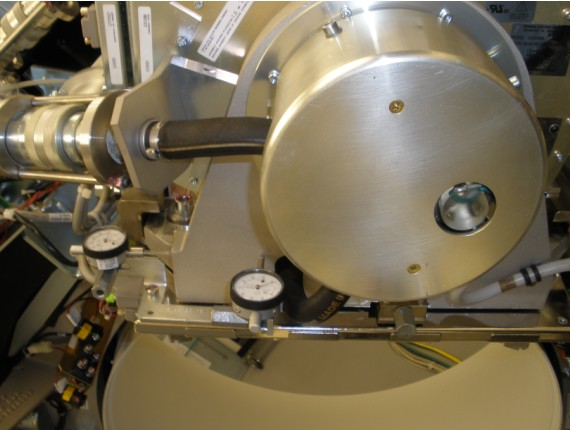

Operating Documentation
Direction 5193575-800, Rev# 5
LightSpeed 7.X Service Information - Adv
Operating Documentation |
| Required Persons | Preliminary Reqs | Procedure | Finalization |
|---|---|---|---|
| 1 | Timing Not Applicable | 1 hour | 5 hours |
The purpose of the cold ISO Alignment procedure is to move the X-Ray Tube in the X-axis, such that the iso-center falls on the iso-DAS channel of the detector.
| Last Revised: | 24 October 2008 |
| Item | Qty | Effectivity | Part# | Manufacturer | |
|---|---|---|---|---|---|
| Dial Indicators | 2 | - | - | - | |
| Condition | Reference | Eff |
|---|---|---|
For Performix Pro VCT 100 X-ray Tube and Performix HD X-ray Tube | - | - |
Recommend procedure is completed by trained personnel. | - | - |
Tube Temperature < 200° C (per Tube Temperature Verification ) | - | - |
If this procedure execution is not due to another service procedure complete the following preparation steps:
Move table to home position.
Remove gantry right side cover.
Turn OFF [HVDC ENABLE] , [AXIAL DRIVE ENABLE] , and [120 VAC] switches on Service Switch panel.
Remove scan window, gantry left side cover, gantry top covers and gantry front cover.
Turn ON [120 VAC] , [AXIAL DRIVE ENABLE] , and [HVDC ENABLE] switches on Service Switch panel.
Select [CALIBRATION] tab from Service Desktop.
Select [ISO ALIGNMENT] .
Click first [SCAN] from ISO Alignment tool to execute air scans.
Press [START] on SCIM when it flashes.
| NOTE: | If one or more tube spits occur, repeat Steps (3) – (4). |
At gantry, attach 1/8-inch diameter round metal shaft to end of table nearest gantry, or to phantom holder.
Turn ON laser alignment lights.
Move table into gantry until axial internal alignment lights are aligned with metal shaft mid-point.
Adjust phantom hold side knob until center of metal shaft is 35mm to right of sagittal internal alignment lights.
Move table elevation until coronal internal alignment lights are lined up with metal shaft.
Move table elevation until metal shaft is 35mm above scan plane.
Click second [SCAN] from ISO Alignment tool to execute pin scans.
Press [START] on SCIM when it flashes.
| NOTE: | If one or more tube spits occur, Steps (11) – (12) are repeated. |
Click [CALCULATE] from ISO Alignment tool.
If ISO Alignment tool displays: “ISO is in specification and no movement is needed.” skip Mechanical Alignment.
Move table to longitudinal home position.
Turn OFF [HVDC ENABLE] , [AXIAL DRIVE ENABLE] and [120 VAC] switches on Service Switch panel.
Manually rotate gantry until X-Ray tube reaches 2 o'clock position.
Engage rotational lock.
Mount dial indicator gauge on Z-Axis mounting bracket, located on tube assembly front face, with gauge's probe resting perpendicular to tube casting's front face. (See Illustration 1.)
Illustration 1: Dial Indicator Mounting Location

Mount dial indicator gauge on X-Axis mounting bracket, located on tube assembly left face, with gauge's probe resting perpendicular to tube casting's left face. (See Illustration 1.)
Set both dial indicators to zero.
Loosen four M-12 mounting bolts on tube assembly about 1/4 to 1/2 turns.
Turn X-Axis adjustment screw, located on tube assembly left side, in direction specified by ISO Alignment tool until dial indicator shows ISO-Alignment calculated value (screw 1 in Illustration 2).
EXAMPLE: "-0.06(mm) –0.00230(inches) DOWN"
| NOTE: | 1 mil is equal to 0.001 inches. |
| NOTE: | Turn the adjustment screw clockwise for "Down." Turn the adjustment screw counter-clockwise for "Up." |
Illustration 2: Adjustment Screws

If Z-Axis dial indicator shows that tube moved left or right, turn Z-Axis adjustment screw (screw 2 in Illustration 2) to position tube back to its original left-right position .
Tighten four M12 mounting bolts on tube assembly in a cross pattern configuration to the following torque values:
| 49 ft.-lbs | 66 N-m | 590 in-lbs | 680 kg-cm |
| NOTE: | Ensure that neither dial indicator value changes during the tightening procedure. |
Disengage rotational lock.
Turn ON [120 VAC] , [AXIAL DRIVE ENABLE] and [HVDC ENABLE] switches on Service Switch panel.
Click [RESTART] from ISO Alignment tool and repeat Data Acquisition, Steps (3) – (12) to re-check adjustment.
Repeat Mechanical Alignment until ISO Alignment tool displays: "ISO is in specification and no movement is needed."
Perform Z-Alignment.
| NOTE: | If adjustments were made during Z-Alignment, repeat Data Acquisition of this procedure. Cold ISO Alignment must always be the last adjustment made. |
Remove both dial indicators from gantry.
Verify that the two dial indicator mounting-bracket screws are tight.
If procedure execution was due to another service procedure, return to associated Replacement Service Procedure
If procedure execution was not due to another service procedure, complete the following procedures: